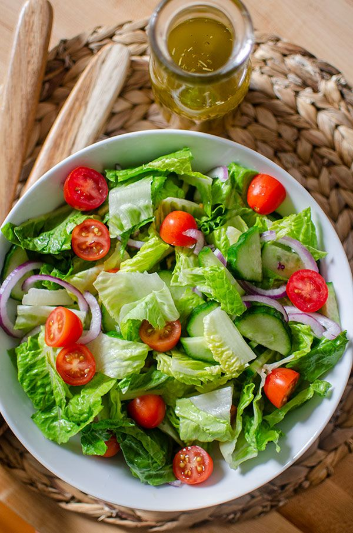

Salad's Recipe

Choosing your favourite vegetables to make salad is avaliable. I'll give you my method of making salad.
The ingredients you need:
- Cucumbers
- Tomatoes
- cabbages
- Olive oil
The steps are very simple. Here's what you should do:
- Chop the vegetables into small pieces after washing them (my personal option. You can chop them the way you want)
- sink them in worm salty water for 30-60 seconds
- Add the olive oil, and mix them on the plate.
Enjoy your meal!!